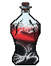
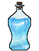
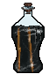
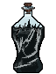
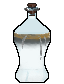
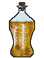
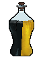
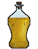

Путь «Судья»
От слабой к сильной: Seq 9 «Арбитр» → Seq 1 «Длань Порядка». Сменить этот путь на другой нельзя.
| Seq | Последовательность | Ступень сервера |
|---|---|---|
| 9 | Арбитр | II |
| 8 | Шериф | III |
| 7 | Дознаватель | IV |
| 6 | Вершитель Суда | V |
| 5 | Дисциплинарный Паладин | VI |
| 4 | Маг Императива | VII |
| 3 | Охотник на Хаос | VIII |
| 2 | Уравнитель | — |
| 1 | Длань Порядка | — |
У каждой последовательности: зелье и его ингредиенты (главный — первым), способности, которые она открывает, и отыгрыш — действия, которые переваривают зелье. Ингредиенты указаны с двумя самыми доступными источниками; все — по ссылке. Ингредиенты Seq 9–6 этого пути бывают и в товарах у жителя Торговец Потусторонних — у каждого по 2 случайных предложения на уровень (цены).
Seq 9 · Арбитр
Зелье  Арбитр Зелье, формула
Арбитр Зелье, формула  Арбитр Рецепт зелья (Последовательность 9). Эта Seq нужна для ступени II.
Арбитр Рецепт зелья (Последовательность 9). Эта Seq нужна для ступени II.
Ингредиенты
 Арбитр Характеристика Потустороннего (Последовательность 9) — характеристика Потустороннего
Арбитр Характеристика Потустороннего (Последовательность 9) — характеристика Потустороннего Красное вино — сундук: Клад — 40 %; житель: Фермер (уровень «мастер») — 24 изумруда, до 2 сделок. Все источники (4)
Красное вино — сундук: Клад — 40 %; житель: Фермер (уровень «мастер») — 24 изумруда, до 2 сделок. Все источники (4) Золото — крафт: камнерез; сундук: Постройки Мира духов — 35 %. Все источники (4)
Золото — крафт: камнерез; сундук: Постройки Мира духов — 35 %. Все источники (4) Зелёный краситель — обычный предмет
Зелёный краситель — обычный предмет Перо — обычный предмет
Перо — обычный предмет
Способности
- Медитация — Медитировать, восполняя духовность
- Власть — Явить власть Арбитра. Снять с существ рядом усиления, замедлить их или лишить брони.
- Физическое усиление (пассивная)
- Порядок (пассивная) — Неосознанно поддерживать порядок. Чувствовать убийства в пределах 40 блоков.
Отыгрыш — переваривание за действие и перерыв между засчитанными:
- Поторговать с жителем — 1,4 %, раз в 20 с
- Использовать наковальню — 0,95 %, раз в 10 с
- Убить моба, не нацеленного на вас — 0,47 %, раз в 5 с
- Использовать кафедру — 0,76 %, раз в 15 с
- Поговорить с жителем — 0,57 %, раз в 10 с
Seq 8 · Шериф
Зелье  Шериф Рецепт зелья (Последовательность 8). Эта Seq нужна для ступени III.
Шериф Рецепт зелья (Последовательность 8). Эта Seq нужна для ступени III.
Ингредиенты
- Шериф Характеристика Потустороннего (Последовательность 8) — характеристика Потустороннего
 Глаза Демонического червя ужаса — крафт: верстак; существо мода: Злоуст (водится: Мир духов; приходит и Ночью Мира духов) — 14 % за убийство. Все источники (3)
Глаза Демонического червя ужаса — крафт: верстак; существо мода: Злоуст (водится: Мир духов; приходит и Ночью Мира духов) — 14 % за убийство. Все источники (3) Правая лапа Серебряного боевого медведя — добыча: Белый медведь — 25 % за убийство игроком; существо мода: Гнойная рука (водится: Мир духов) — 31 % за убийство. Все источники (3)
Правая лапа Серебряного боевого медведя — добыча: Белый медведь — 25 % за убийство игроком; существо мода: Гнойная рука (водится: Мир духов) — 31 % за убийство. Все источники (3) Бумага — обычный предмет
Бумага — обычный предмет Железный слиток — обычный предмет
Железный слиток — обычный предмет
Способности
- Распознание — Раскрывает имя, путь и последовательность выбранного существа в пределах 40 блоков. Не раскрывает Судей низших последовательностей и существ, намного сильнее вас.
- Юрисдикция — Устанавливает обширную зону с центром на вас. Вы узнаёте, когда существа входят в неё или покидают. Внутри вашей Юрисдикции дальность «Ока порядка» удваивается.
- Око порядка — Подсвечивать опасности вокруг красным свечением
Отыгрыш — переваривание за действие и перерыв между засчитанными:
- Убить сильного моба — 0,84 %, раз в 5 с
- Использовать картографический стол — 0,84 %, раз в 10 с
- Применить «Распознание» — 1,7 %, раз в 15 с
- Убить нежить — 0,67 %, раз в 5 с
- Позвонить в колокол — 0,5 %, раз в 10 с
Seq 7 · Дознаватель
Зелье  Дознаватель Рецепт зелья (Последовательность 7). Эта Seq нужна для ступени IV.
Дознаватель Рецепт зелья (Последовательность 7). Эта Seq нужна для ступени IV.
Ингредиенты
 Дознаватель Характеристика Потустороннего (Последовательность 7) — характеристика Потустороннего
Дознаватель Характеристика Потустороннего (Последовательность 7) — характеристика Потустороннего Рог чёрной змеи с узором-вспышкой — крафт: верстак; сундук: Постройки Мира духов — 24 %. Все источники (4)
Рог чёрной змеи с узором-вспышкой — крафт: верстак; сундук: Постройки Мира духов — 24 %. Все источники (4) Прах озёрного духа — блок: Глина (лопатой; только природный блок) — 12 % за блок; сундук: Постройки Мира духов — 24 %. Все источники (4)
Прах озёрного духа — блок: Глина (лопатой; только природный блок) — 12 % за блок; сундук: Постройки Мира духов — 24 %. Все источники (4)- Громоотвод — обычный предмет
 Чёрный краситель — обычный предмет
Чёрный краситель — обычный предмет
Способности
- Иллюзорные орудия пыток — Явить иллюзорные орудия пыток, разящие врагов
Отыгрыш — переваривание за действие и перерыв между засчитанными:
- Использовать кафедру — 1,1 %, раз в 15 с
- Использовать стол зачаровывания — 0,37 %, раз в 10 с
- Применить «Око порядка» — 1,5 %, раз в 15 с
- Поговорить с жителем — 0,44 %, раз в 10 с
- Прочитать подписанную книгу — 0,44 %, раз в 15 с
Seq 6 · Вершитель Суда
Зелье  Вершитель Суда Рецепт зелья (Последовательность 6). Эта Seq нужна для ступени V.
Вершитель Суда Рецепт зелья (Последовательность 6). Эта Seq нужна для ступени V.
Ингредиенты
 Вершитель Суда Характеристика Потустороннего (Последовательность 6) — характеристика Потустороннего
Вершитель Суда Характеристика Потустороннего (Последовательность 6) — характеристика Потустороннего- Глаза Демонического червя ужаса — крафт: верстак; существо мода: Злоуст (водится: Мир духов; приходит и Ночью Мира духов) — 14 % за убийство. Все источники (3)
- Рог чёрной змеи с узором-вспышкой — крафт: верстак; сундук: Постройки Мира духов — 24 %. Все источники (4)
- Железный слиток — обычный предмет
 Книга и перо — обычный предмет
Книга и перо — обычный предмет
Способности
- Приговор: изгнание — Отбросить цель вверх выбросом силы, даруя ей медленное падение, пока её уносит прочь.
- Запрет — Объявить вид действий запрещённым в зоне 80 блоков. Одновременно активно до 3 зон каждого вида.
- Заточение — Заточить цель, обездвижив её. Отнимает у вас 300 духовности каждые 4 секунды. Примените снова, чтобы освободить.
- Язык правосудия — Изрекать приговоры на Языке правосудия: обязать хранить тайну, объявить смерть или подготовить порку.
- Ограждение — Воздвигнуть невидимые стены, образующие полую клетку вокруг выбранного места. Телепортация из клетки заблокирована.
Отыгрыш — переваривание за действие и перерыв между засчитанными:
- Использовать наковальню — 0,63 %, раз в 10 с
- Поторговать с жителем — 0,63 %, раз в 20 с
- Убить сильного моба — 0,63 %, раз в 5 с
- Поставить табличку — 0,38 %, раз в 15 с
- Убить нежить — 0,38 %, раз в 5 с
Seq 5 · Дисциплинарный Паладин
Зелье  Дисциплинарный Паладин Рецепт зелья (Последовательность 5). Эта Seq нужна для ступени VI.
Дисциплинарный Паладин Рецепт зелья (Последовательность 5). Эта Seq нужна для ступени VI.
Ингредиенты
 Дисциплинарный Паладин Характеристика Потустороннего (Последовательность 5) — характеристика Потустороннего
Дисциплинарный Паладин Характеристика Потустороннего (Последовательность 5) — характеристика Потустороннего- Прах озёрного духа — блок: Глина (лопатой; только природный блок) — 12 % за блок; сундук: Постройки Мира духов — 24 %. Все источники (4)
- Золото — крафт: камнерез; сундук: Постройки Мира духов — 35 %. Все источники (4)
- Щит — обычный предмет
- Железный блок — обычный предмет
Способности
- Духовное зрение
- Кара — Отметить цель для кары. Пока активно, вы излучаете подобное рассвету сияние. Нарушение условия кары даёт вам случайное усиление и накладывает на цель случайное ослабление.
- Усиленный разум (пассивная) — Негативные эффекты, потеря контроля и гадание действуют на вас слабее.
Отыгрыш — переваривание за действие и перерыв между засчитанными:
- Убить сильного моба — 0,79 %, раз в 5 с
- Убить исподтишка — 0,53 %, раз в 2 с
- Убить при полном здоровье — 0,53 %, раз в 2 с
- Убить нежить — 0,42 %, раз в 5 с
- Создать железную броню — 0,32 %, раз в 20 с
- Использовать стол зачаровывания — 0,26 %, раз в 10 с
Seq 4 · Маг Императива
Зелье  Маг Императива Рецепт зелья (Последовательность 4). Эта Seq нужна для ступени VII.
Маг Императива Рецепт зелья (Последовательность 4). Эта Seq нужна для ступени VII.
Ингредиенты
 Маг Императива Характеристика Потустороннего (Последовательность 4) — характеристика Потустороннего
Маг Императива Характеристика Потустороннего (Последовательность 4) — характеристика Потустороннего- Рог чёрной змеи с узором-вспышкой — крафт: верстак; сундук: Постройки Мира духов — 24 %. Все источники (4)
 Старинные часы — сундук: Постройки Мира духов — 5,6–6,9 %; существо мода: Погибель (водится: Мир духов; приходит и Ночью Мира духов) — 1,7 % за убийство.
Старинные часы — сундук: Постройки Мира духов — 5,6–6,9 %; существо мода: Погибель (водится: Мир духов; приходит и Ночью Мира духов) — 1,7 % за убийство.- Книга и перо — обычный предмет
- Железный слиток — обычный предмет
Способности
- Гадание
- Мифическая форма
- Закон — Провозгласить закон. Чем шире закон, тем короче его действие.
- Казнь — Казнить цель издалека. Высокий шанс неудачи.
Отыгрыш — переваривание за действие и перерыв между засчитанными:
- Использовать кафедру — 0,63 %, раз в 20 с
- Создать карту — 0,21 %, раз в 15 с
- Применить «Запрет» — 0,84 %, раз в 20 с
- Поставить флаг — 0,25 %, раз в 20 с
- Использовать маяк — 0,34 %, раз в 30 с
Seq 3 · Охотник на Хаос
Зелье  Охотник на Хаос Рецепт зелья (Последовательность 3). Эта Seq нужна для ступени VIII.
Охотник на Хаос Рецепт зелья (Последовательность 3). Эта Seq нужна для ступени VIII.
Ингредиенты
 Охотник на Хаос Характеристика Потустороннего (Последовательность 3) — характеристика Потустороннего
Охотник на Хаос Характеристика Потустороннего (Последовательность 3) — характеристика Потустороннего- Золото — крафт: камнерез; сундук: Постройки Мира духов — 35 %. Все источники (4)
 Отрезок сокрытой судьбы — существо мода: Погибель (водится: Мир духов; приходит и Ночью Мира духов) — 1,7 % за убийство.
Отрезок сокрытой судьбы — существо мода: Погибель (водится: Мир духов; приходит и Ночью Мира духов) — 1,7 % за убийство. Железный меч — обычный предмет
Железный меч — обычный предмет- Цепь — обычный предмет
Способности
- Уравновешивание — Провозгласить равновесие над землями. Все положительные и отрицательные эффекты, включая ваши, снимаются каждые 3 минуты.
- Меч суда — Вынести прямой приговор, которого не избежать. Шанс успеха начинается с 40% и растёт на 10% за каждый раз, когда цель сопротивлялась вашим запретам.
- Исполнение приговора — Мгновенно телепортироваться к цели, чаще всех сопротивлявшейся вашим законам.
- Охота на Хаос (пассивная) — Потусторонние выше вас рангом и Потусторонние путей бедствия в пределах 60 блоков подсвечиваются контуром, видимым только вам.
Отыгрыш — переваривание за действие и перерыв между засчитанными:
- Убить сильного моба — 0,47 %, раз в 5 с
- Убить, будучи в меньшинстве — 0,32 %, раз в 5 с
- Атаковать более сильного моба — 0,32 %, раз в 5 с
- Применить «Уравновешивание» — 0,63 %, раз в 20 с
- Убить нежить — 0,25 %, раз в 5 с
- Убить из лука — 0,19 %, раз в 5 с
Seq 2 · Уравнитель
Зелье  Уравнитель Рецепт зелья (Последовательность 2).
Уравнитель Рецепт зелья (Последовательность 2).
Ингредиенты
- Уравнитель Характеристика Потустороннего (Последовательность 2) — характеристика Потустороннего
- Старинные часы — сундук: Постройки Мира духов — 5,6–6,9 %; существо мода: Погибель (водится: Мир духов; приходит и Ночью Мира духов) — 1,7 % за убийство.
 Ложная история, принятая за правду — существо мода: Демон знания (водится: Мир духов, океаны; приходит и Ночью Мира духов) — 2,9 % за убийство.
Ложная история, принятая за правду — существо мода: Демон знания (водится: Мир духов, океаны; приходит и Ночью Мира духов) — 2,9 % за убийство.- Золотой блок — обычный предмет
- Книга и перо — обычный предмет
Способности
- Власть ангела — Ангельская сила: странствуйте по Миру духов и сокрушайте артефакты
- Изгнание равновесия — Оценить равновесие сил поблизости. Потусторонние превосходящей стороны изгоняются из битвы на срок от 10 секунд до 2 минут и не могут наносить урон или применять способности.
- Личное равновесие — В поединке один на один запечатать способности последовательности 1 у цели на 1 минуту, уравняв силы противников.
Отыгрыш — переваривание за действие и перерыв между засчитанными:
- Использовать наковальню — 0,21 %, раз в 10 с
- Поторговать с жителем — 0,21 %, раз в 20 с
- Сохранять полное здоровье — 0,042 %, раз в 20 с
- Убить при полном здоровье — 0,13 %, раз в 5 с
Seq 1 · Длань Порядка
Зелье  Длань Порядка Рецепт зелья (Последовательность 1).
Длань Порядка Рецепт зелья (Последовательность 1).
Ингредиенты
 Длань Порядка Характеристика Потустороннего (Последовательность 1) — характеристика Потустороннего
Длань Порядка Характеристика Потустороннего (Последовательность 1) — характеристика Потустороннего Потрёпанный альманах — существо мода: Демон знания (водится: Мир духов, океаны; приходит и Ночью Мира духов) — 0,95 % за убийство.
Потрёпанный альманах — существо мода: Демон знания (водится: Мир духов, океаны; приходит и Ночью Мира духов) — 0,95 % за убийство. Огни, извлечённые из Реки судьбы — существо мода: Погибель (водится: Мир духов; приходит и Ночью Мира духов) — 1,7 % за убийство.
Огни, извлечённые из Реки судьбы — существо мода: Погибель (водится: Мир духов; приходит и Ночью Мира духов) — 1,7 % за убийство. Книга — обычный предмет
Книга — обычный предмет- Железный блок — обычный предмет
Способности
- Посредник Порядка — Объединённая власть Длани Порядка. Пожертвовать собой ради краткого превосхождения, объявить вечные запреты или установить вечные законы.
Отыгрыш — переваривание за действие и перерыв между засчитанными:
- Убить сильного моба — 0,16 %, раз в 5 с
- Убить при полном здоровье — 0,11 %, раз в 2 с
- Применить «Посредник Порядка» — 0,32 %, раз в 20 с
- Убить босса — 0,21 %, раз в 1 мин
- Убить нежить — 0,084 %, раз в 5 с
- Поставить флаг — 0,063 %, раз в 20 с